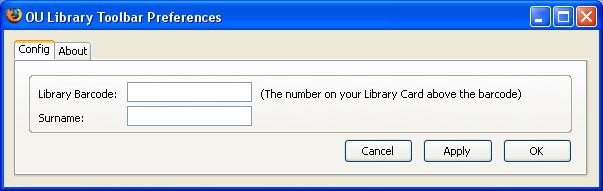

March 02, 2006
Voyager Library Catalogue Toolbar
Having worked out how to include an Options/Preferences dialogue in a Firefox extension (I'll post a tutorial if I get a chance), I've updated the OUseful OU Library toolbar for Firefox so that a user can now store their Library card details and click through to their Library record with a single click from the toolbar.

I've also changed the look of the toolbar back to all text buttons, rather than images.

This is in part taking a lead from the Library official library website, which has been redesigned to be more in keeping with out current brand guidelines and which has dropped the large yellow icon used previously to identify the Librarian On Call instant messaging service.
The Library Lookup uses a version of Udell's library lookup bookmarklet to extract an ISBN number from the URL of a currently loaded page (for example, an Amazon book page) and search the OU Voyager library for that book.
I believe that another OU Library front page redesign is on the cards, so it maybe worth my time doodling a few thoughts about how it may be improved here, just in case anyone from the library happens to subscribe to the OUseful feed!;-)
(If you haven't see the OU Library homepage, check out the link. In my opinion, it's a bit cluttered? The first thing I think I'd do would be to make the most of any currently set authentication cookies (which identify my role - staff, student etc.) and only offer me links that are relevant on the front page.)
Anyway, back to the topic of my unofficial toolbar, several shortcuts are provided via a dropdown list to OU Library related webpages. I'm still not sure what should go on this list:
The Searches menu allows you to make a search using a selected collection/index. The Voyager button also forces a search using the term(s) in the search text vbox, on the OU Voyager Library catalogue.
The user customisation dialogue:

enables an automatic login to My Library Record without the user having to manually fill in the required login form (the button completes and submits the form automatically).
The My Open Library link makes use of the OU's common SAMS authentication scheme to take the user to the correct My Open Library page.
If you want to try out the extension, you can install it from here.
Next on the to do list for the toolbar are a couple more personalisation tools which will allow a user to add links to an additional library website - most OU students make use of an academic library near to them for book loans, and the OU library for access to online collections, ebooks etc. A couple of switches would allow this address to be used as the primary address for a library catalogue search or Library Lookup.
(If you are an OU student, and you do try out the toolbar, please get in touch and let me know what you think about it - for good or bad...)
This additional customisation will also pave the way for a generic library toolbar which will allow the user to configure the toolbar for use with their own Library system.
What I'm thinking off at the moment are options to: define 3 or four links in the dropdown links menu; customise two drop down search options, the primary library catalogue search button and the target for the Library Lookup; customise the Librarian On Call contact button; customise the My Library Record Link (this may depend on the particular catalogue system). The My Open Library button would go.
In the meantime, if you are interested in trying out a customised version for your own library, please email me with details of the links/services you'd like included - especially if they differ markedly from my generalisation/customisation thoughts above - and I'll see what I can do in terms of getting a customised toolbar to you (feel free to hack the extension code yourself, of course - but please let me know if you do:-). This information will also help me work out just what to put into a generic, user customised toolbar.
Update: laterst version is OU Library 1.3.1; install it from here.
Posted by ajh59 at March 2, 2006 12:44 AM